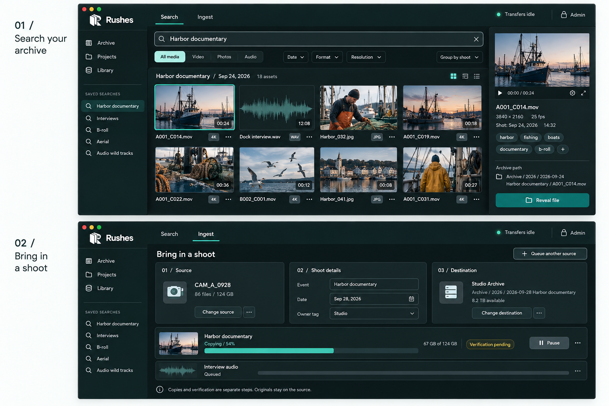

Find the footage. Make the story.
Search by shoot, filename, folder, tag, or vibe. Preview video, photos, and audio together, gather your selection into a project, and export it to a compatible editing app. Get straight to the cut.
SEARCHA media manager for filmmakers, photographers, and production teams.
Find your footage, bring in new shoots, and make sense of years of work.
Video, photos, and audio. Together, from the same shoot.

Compare contents and confirm a surviving original before moving copies aside.
Preview renders and waveform caches. Project autosaves stay protected.
The source drive disconnected. Reconnect it and review the job.
Three focused workspaces. One connected system. Rushes runs on your NAS today, with a Mac helper to bring in media from camera cards, external drives, and shared folders. Self-contained Mac and Windows versions are planned.
Search by shoot, filename, folder, tag, or vibe. Preview video, photos, and audio together, gather your selection into a project, and export it to a compatible editing app. Get straight to the cut.
SEARCHChoose your source, name the shoot, and confirm where it belongs. Follow the copy and verification progress as your media joins the archive.
INGESTSet the organization rules, review duplicates, clear rebuildable files, and see what needs attention—all in one workspace.
MANAGEYears of shoots, scattered drives, and folders nobody remembers naming. Get a clearer picture of what’s there and what needs attention.
Departments, clients, or projects—choose a structure that fits your team. Give new media a consistent home from the moment it comes in.
Spot duplicate copies, review rebuildable editing files, and catch unfinished transfers. Keep your storage useful as your work grows.
Built around the drives and shared storage you already use. Designed for independent creators and small teams with years of media to look after.
Self-contained Mac and Windows apps are planned. Today, Rushes runs on a NAS with a helper on a Mac.
The design keeps media on your hardware, with no uploads or tracking.
Cleanup moves files to a holding folder. You decide when to empty it.
Visible jobs and progress. A local admin password protects maintenance actions.
Find what you shot. Make what’s next. Rushes is taking shape—follow the project and help build a better home for production media.
Follow Rushes on GitHubIn development.